Introduction & Background
American Sign Language (ASL) is a widely used visual language in North America, substantially facilitating communication within the Deaf community.
With technological advancement, there has been a growing interest in developing machine learning models to recognize ASL signs.
Recent studies have explored various machine-learning techniques for ASL recognition. For instance, Fatmi et al. (2019) demonstrated that using
Artificial Neural Networks (ANN) provides a higher accuracy in recognizing ASL words compared to other machine learning techniques [2]. Another study by Fierro-Radilla et al.
(2021) applied a siamese network architecture to the ASL alphabet dataset and achieved results that outperformed previous works [3].
These studies highlight the potential of machine learning in enhancing ASL recognition.
Dataset
This dataset comprises 1728 RGB images, each with a resolution of approximately 400x400 pixels. These images are manually labeled with all 26 letters of the ASL alphabet, ranging from A to Z. To facilitate object detection, the dataset is also equipped with bounding box annotations in COCO (Common Objects in Context) format, including both label and bounding box location. [1]
Problem Definition
This project aims to build an accurate, robust, and efficient machine learning model to detect ASL letters from gesture images, bridging the communication gap between ASL and non-ASL users and making virtual meetings more inclusive to the Deaf community.
Methods
Explanatory Data Analysis
Instances per class: no data imbalanceTo understand the distribution and characteristics of the dataset used for hand gesture recognition, we conducted exploratory data analysis (EDA); the EDA consisted of the following visual techniques.
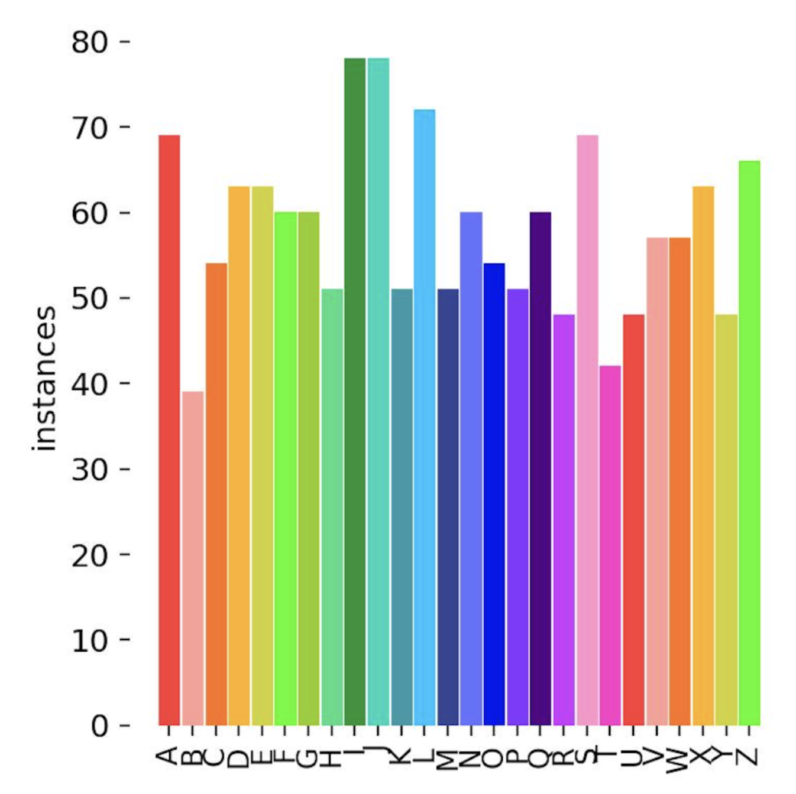 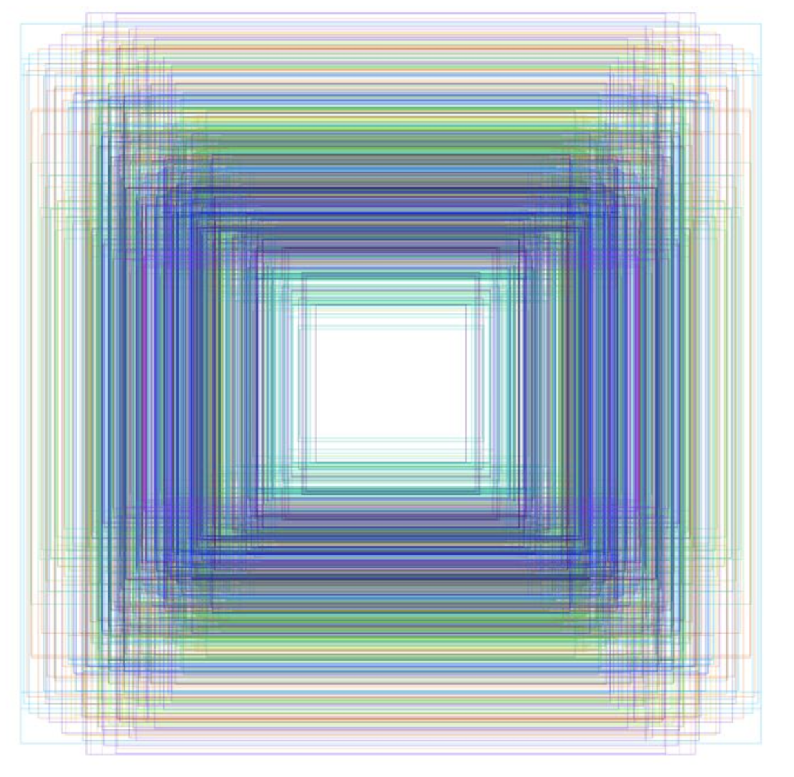
- Class Distribution Bar Chart: a multicolor bar was created to visualize the distribution of instances across different classes (letters). Each bar represents a class label, and the height indicates its number of instances. We found no imbalance of class distribution.
- Bounding box Distribution Plot: the superimposed bounding box plot was generated to visualize the variability of the bounding box dimensions and positions. Each rectangle represents a bounding box for a hand gesture in the dataset. We found no imbalance in bounding box distribution.
- Visualization of ground-truth bounding box and label together with the image
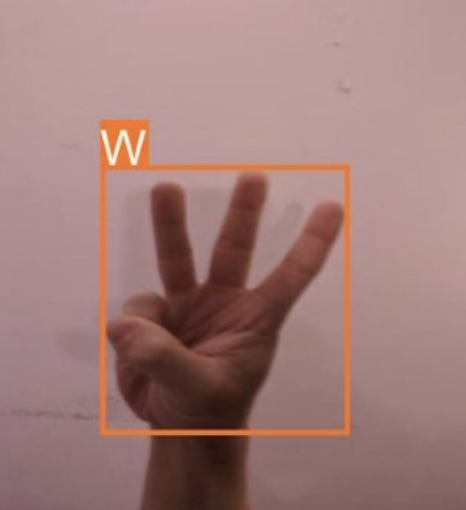
We first fine-tuned Hugging Face’s DETR - DEtection TRansformer (object detection). After about 3 hours of training, the results were not promising, so we first implemented a Keras Sequential CNN (image classification) and then fine-tuned Yolov5m (object detection), which both had much more promising results.
Keras Sequential CNN
Keras Sequential CNN Overview
What is a sequential model? A sequential model is a linear stack of layers which allows model creation layer-by-layer where each layer has one input tensor and one output tensor. Basically, sequential models are like trains, where each train car (layer) follows right after the other and the passengers are the data. Each train car/layer has a specific job (ex: processing information). A CNN is a deep learning algorithm that can take in an input image, assign importance (with weights and biases) to aspects of the image.We used the Keras system for the Sequential CNN for image classification. It’s worth noting that this is not an entire approach in-and-of-itself, but rather a start to a second approach (two-staged CNN-based object detector) we will complete before the final submission. Although the problem description states that our project is object detection, this is our attempt at ensemble learning to achieve exactly that, where we will pair object detection with image classification in hopes of higher accuracy rates.
This will work as follows:
- First, we will pass in data into an object detection system (which will be a DETR model fine-tuned for ASL letter detection).
- Next, each of the detected bounding boxes (after filtering by confidence rates), will be cropped and passed into this Keras Sequential image classification model to determine what letter is ultimately being passed in.
Preprocessing for Keras Sequential CNN
To create this Keras Sequential model, we first augmented the data - using various approaches including image resizing (to 180 x 180), random rotation, random horizontal flips, and random zoom. Example augmentations can be seen in the image below. This was done to ensure the model could understand various orientations. We also normalized the pixel values of the image to bring values from the range of 0 to 255 to the range of 0 to 1.
Results & Discussion for Keras Sequential CNN
After preprocessing the data, we utilized Keras to train the sequential model, tuning parameters like dropout rate to prevent overfitting, max pooling (reduces height and width of input volume for next layer) to reduce computational complexity and extract dominant features, and dense layers (interpret the features extracted by the preceding layers to make a final prediction).The results of training and testing the model can be seen in the figures below, which indicate the accuracy and loss per epoch. Notably, the validation accuracy and loss seem to plateau much quicker than the training alternative, at around 20 epochs. Ultimately, the training accuracy ended up being around 95%, while the validation accuracy was closer to 65%. However, we achieved an accuracy rate of 0.75 or 75% when testing on real data.
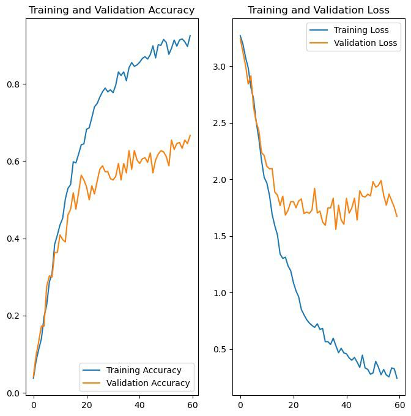
Optimization
The Keras Sequential model was further optimized, and the optimal configuration was found to be similar to the previous configuration but with a few changes to prevent overfitting. These changes included an increase in the dropout rate, which is a rate set to disregard nodes (each node has a dropout rate chance of being disregarded). This allows us to reduce codependence, which therefore allows us to reduce overfitting. This was increased by a factor of 0.1. Then, we also added more image augmentation techniques including random applications of contrast changes with a factor of 0.2. Along with this, we increased the factors of rotation augmentation and scale augmentation from 0.1 to 0.2, and observed a reduction in overfitting. A batch size reduction also helped towards the cause.However, because of the augmentation and dropout rate, we had to increase the number of epochs to maximally increase the training and validation accuracy. Initially, 60 epochs were used, but 120 was found to be ideal for the new parameters.
After these modifications, we observed a rather significant change in accuracy. In the initial attempt (as in the Midterm Report), we observed a 95% train accuracy, a 65% validation accuracy, and a 75% accuracy when tested on external data. In the new attempt, we observed a 94% train accuracy, 79% validation accuracy, and a 84% accuracy when testing on external data, which is significant growth. We also noticed that it was able to be more generalized. Previously, we were not able to get accurate results when we introduced data that was significantly different from the data it had been trained from. For example, it was able to accurately classify the below image as it is very similar to the data that it had been trained on:
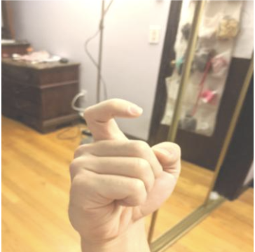
However, it was not able to accurately classify this image as this was completely different from the training set:
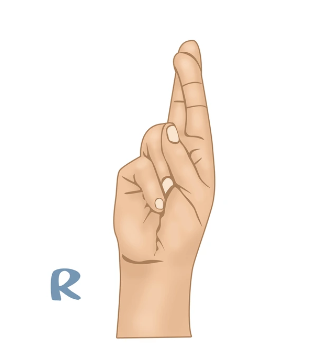
However, with the modified model, although it was not perfect with data outside the norm of what it was trained on, it was significantly better than the previous version at classifying images like the second one above. In fact, it was able to correctly classify that particular image.
In addition, this model was then paired with object detection to serve as a two-stage CNN-based object detector. In other words, the object detector (YOLO) has created a set of bounding boxes for each image where the ASL letter is. This bounding box’s contents are then extracted and resized to (180, 180) to pass through the image classification model. Examples of these images after being trimmed but before being resized are as follows:
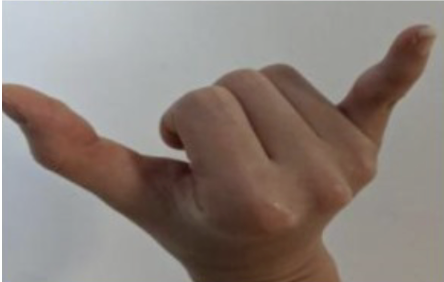 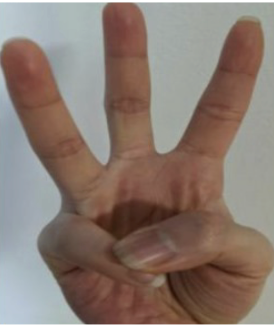
In a test set of 16 images passed through the YOLO model and then the Sequential Model, we found that the Sequential model concurred with the object detection model in 12/16 instances, giving it a relative accuracy of 75%.
YOLO
YOLOv5 Model Overview:
After trying to build and train a CNN classifier from scratch, we also experimented with fine-tuning a state-of-the-art large pre-trained object detection model on our own dataset - YOLOv5 model (YOU ONLY LOOK Once, version 5).YOLOv5 uses one-stage object detection, using a single neural network pass to predict bounding boxes and class probabilities directly from full images in one evaluation. It utilizes CSPDarknet53 as its backbone network, PANet for feature fusion, and a custom detection head. YOLOv5 is also highly efficient in both training and inference, making it well-suited for real-time applications, and has achieved very good performance on benchmark datasets, such as COCO.
YOLOv5 introduces various improvements over its predecessors, including a streamlined architecture with smaller (pruned) models, with sizes ranging from nano to extra-large. Each of these five models have different trade-offs between speed and accuracy, with the smaller ones being the fastest.
Additionally, YOLOv5 models of all sizes are available in both P5 (the original) and P6 architectures. P5 models have three output layers, with strides of 8, 16, and 32, respectively. P6 adds an additional P6/64 stride output layer, meaning that it is better suited for higher resolution images. A final 6 indicates that the P6 model is being used (e.g. YOLOv5m6).
Because our resolution is 400x400, we initially chose YOLOv5m (the P5 architecture in a medium size), which provides a good balance between speed and accuracy and is considered the best-suited for most datasets. It generally offers better performance than YOLOv5n and YOLOv5s while remaining computationally efficient (fast training and lower memory pressure).
The model was trained over 120 epochs, starting from pre-trained weights on a large dataset (COCO) - ‘yolov5m.pt’. Initial learning rate was set to 0.01. Batch size was set to 16.
Preprocessing
To enhance the model’s generalization capabilities and reduce overfitting, we implemented data augmentation with the following techniques to introduce variations in the training dataset, which can simulate conditions the model can encounter in real-life practice.- Horizontal Flips: creating mirroring images for the hand simulates variation in the hand orientation
- Crop up to 20%: this helps the model recognize hand gestures from partial views
- Rotation between -5 degrees to +5 degrees: this helps the model learn variation in hand angles
- Shear: horizontal ± 5 degrees; vertical ± 5 degrees: as shearing distorts the image, this helps the model learn different perspective and angle changes
- Grayscale: add 10% grayscale images to the training set: this can help the model recognize hand gestures without relying on color information
- Brightness: between -25% to +25%: this helps the model to be robust by mimicking different lighting conditions
- Blur: Random Gaussian blur up to 3 pixels: this helps the model to be robust by mimicking focus variation and motion blur
Results & Discussion for YOLOv5m Model
Statistics During Training
During training, we calculated and monitored how mean average precision (mAP) changes over training epochs. mAP measures the YOLO model’s ability to identify an object and its location accurately in terms of bounding box information. The mAP is calculated by averaging the precision for each class and then taking the average of these averages across 26 classes. We assessed mAP at different Intersection over Union (IoU) thresholds, ranging from 0.5 to 0.95. IoU, a standard metric in object detection tasks, measures the overlap between the predicted bounding box and the ground truth, with 1 indicating perfect overlap and 0 indicating no overlap. An IoU of 0.5, representing 50% accuracy, is commonly used as the minimum standard for bounding boxes, while an IoU of 0.95 represents a stringent standard, indicating near-perfect 95% accuracy.The below figure displays these results. The left part of the figure illustrates the average IoU across thresholds from 0.5 to 0.95, while the right part shows results specifically at the IoU threshold of 0.5. Our results demonstrate high mAP values both for mAP from 0.5 to 0.95, which approximates a value of 0.8 after 50 epochs, and for mAP at 0.5, approximating a value of 1 after 25 epochs. This indicates the model's effectiveness in accurately identifying hand gestures and their locations.
We can observe that mAP begins to hit a plateau after approximately 50 epochs.
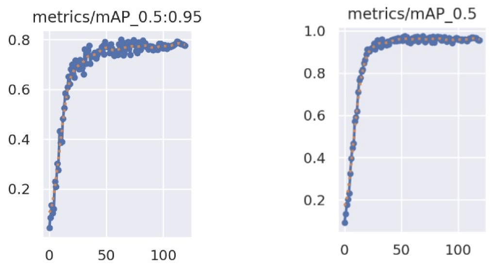
Statistics For Held-Out Test Set
For a held-out test dataset with 144 images, we calculated the precision, recall and F-1 score for all classes from A to Z. The average F1 score is 0.882. The high-performing classes and the problematic classes are analyzed as follows.High Performering Classes
Classes B, D, E, F, H, J, Q, S, U, W, and Z all have high precision and recall, leading to high F1 scores. This suggests that the model performs very well for these classes with both a low false positive and low false negative rate.Problematic Classes
Class I has notably low recall at 0.5, suggesting that the model misses half of the actual 'I' gestures, leading to a low F1 score of 0.61.Class N has a precision of 0.64, indicating a relatively high false positive rate, with an F1 score of 0.69, which is suboptimal compared to other classes.
Class T also shows a lower recall of 0.67, suggesting the model fails to identify one-third of 'T' gestures.
Class V has both low precision and recall, indicating both false positives and false negatives are relatively high, leading to the second-lowest F1 score of 0.67.
Class X has the lowest precision at 0.42 but has a perfect recall. This suggests the model never misses X but it often mistakes other gestures as X.
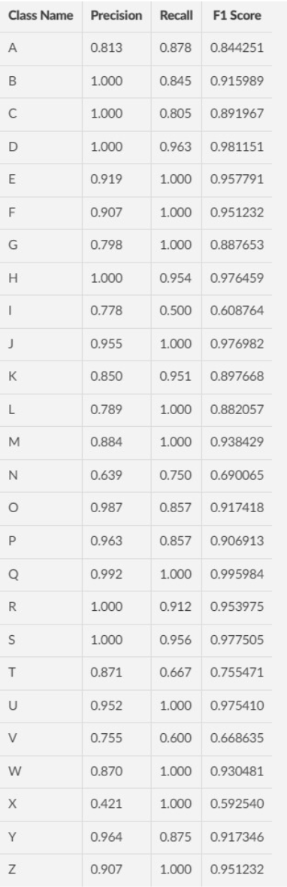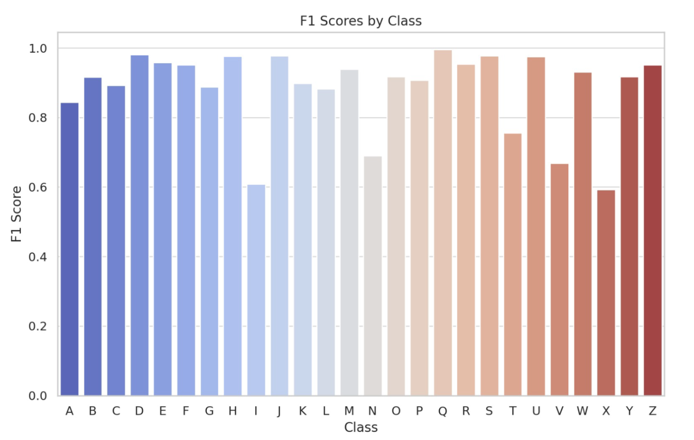
Confusion Matrix
To further examine how the model may make mistakes and how it may confuse one letter with another, we also plotted the confusion matrix shown below: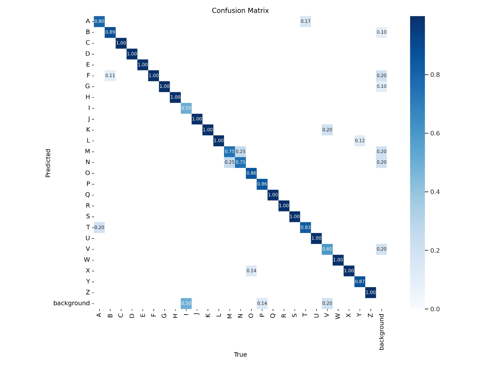 The confusion matrix demonstrates the relationship between predicted labels and actual labels. While most classes achieve high prediction accuracy, we observed that the model occasionally predicts letters against the background, indicating false positives. Additionally, it is evident that the model struggles to differentiate between the letters M and N. Both letters have the lowest accuracies (75%), with a 25% chance that the model confuses one for the other. This suggests that the model might have difficulties distinguishing letters that are similar in appearance. See below for the illustration of the letters M and N in standard ASL gestures. 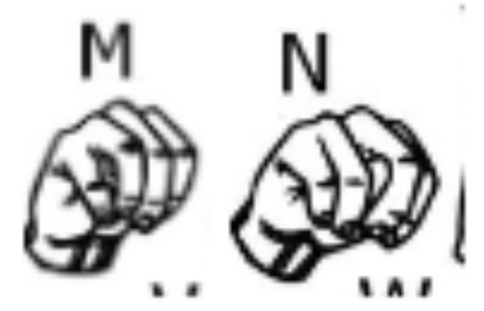
Ground-Truth vs Predicted Label and Bounding Box
After viewing the statistics, we now want to see how the ground truth vs prediction look like. We visualize the ground-truth labels and bounding boxes, as well as the predicted ones.YOLOv5m has excellent performance in predicting the bounding box (finding the hand in image). However, it is also indeed prone to confuse letter M with letter N like the above. It also confuses letter K with letter V as shown in the standard ASL gestures below.
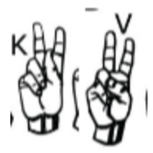
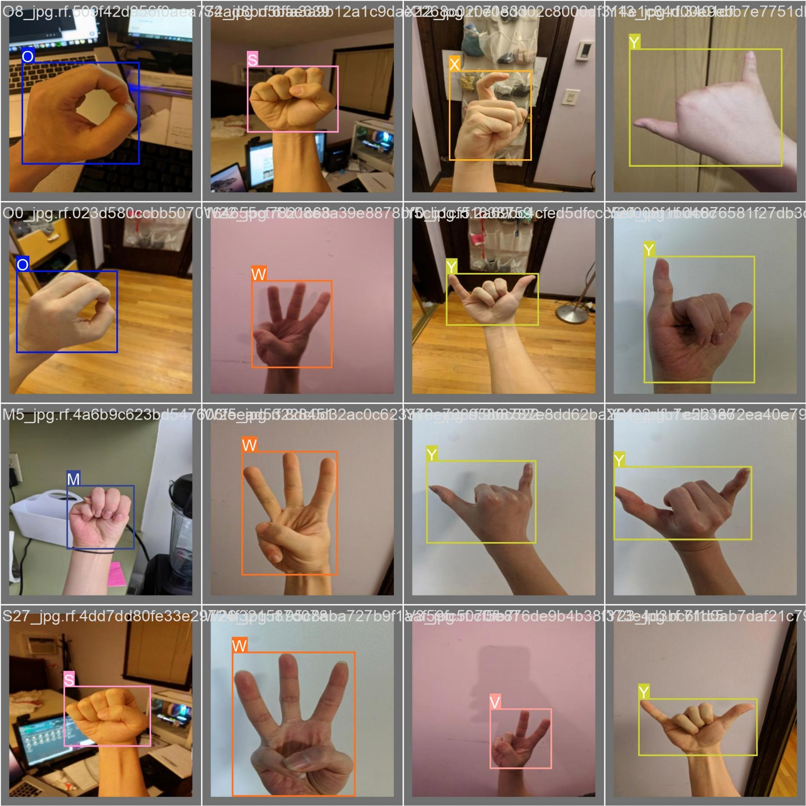
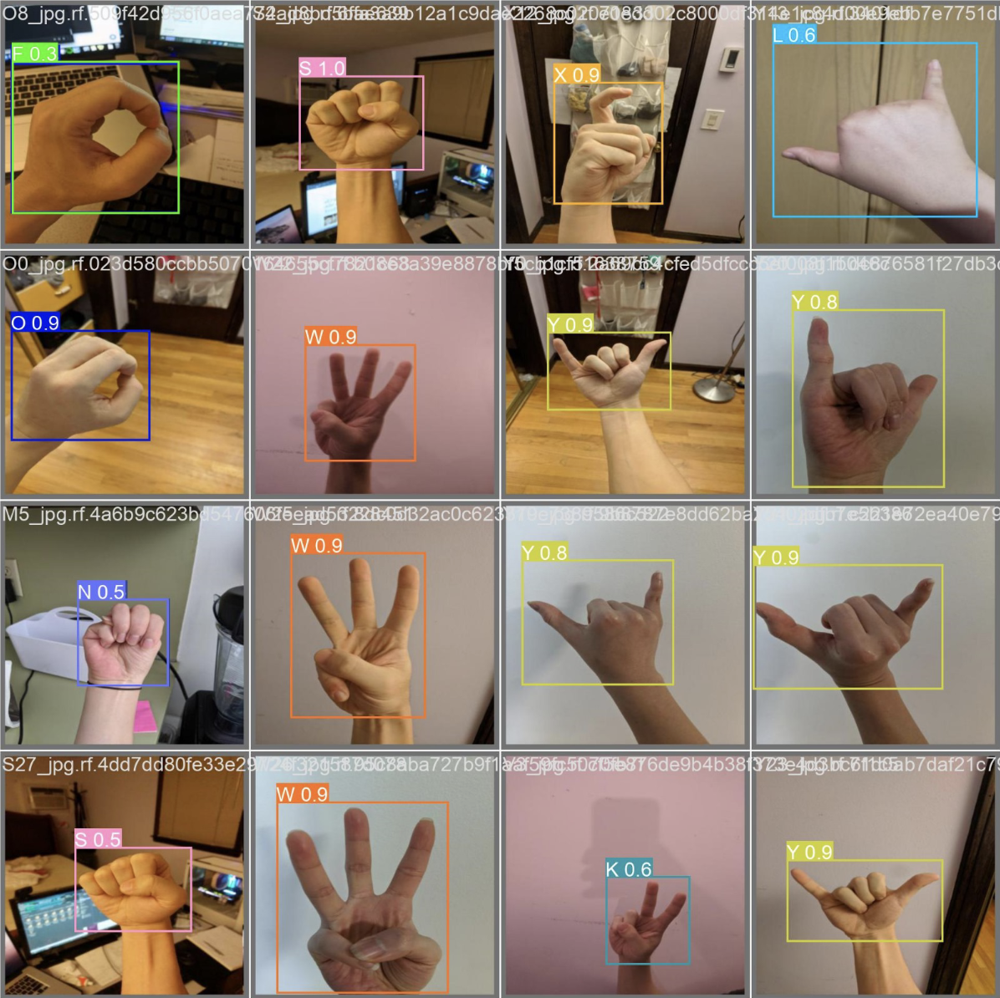
Comparison Between YOLOv5 Models
The extensive analysis displayed above is solely for YOLOv5m, but in order to determine the optimal model and identify weak classes, we continued to fine-tune several other versions of YOLOv5: m6, l, l6, x, and x6. The F-1 scores for each class across all tested models are displayed below: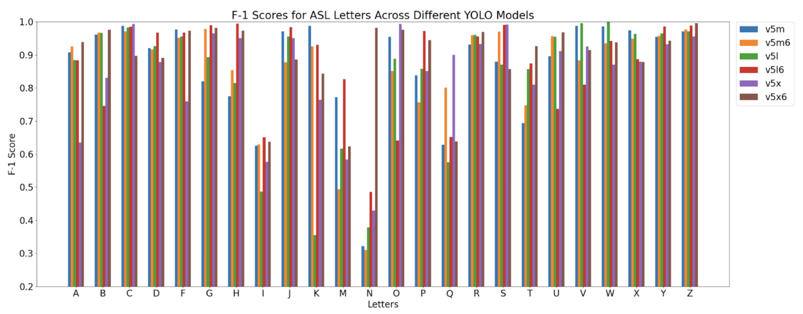
At a glance, certain letters can be seen to have substantially lower average F-1 scores, namely ‘I’, ‘M’, ‘N’, and ‘Q’. The results of ‘N’ are quite informative, as the medium models perform significantly worse (F-1 score of around 0.3) than the extra-large models. Notably, YOLOv5x6 performs extremely well on this particular class, which all other models struggle on. However, this model does not perform consistently better than others, which can be seen in letters such as ‘M’, where YOLOv5l6 performs the best.
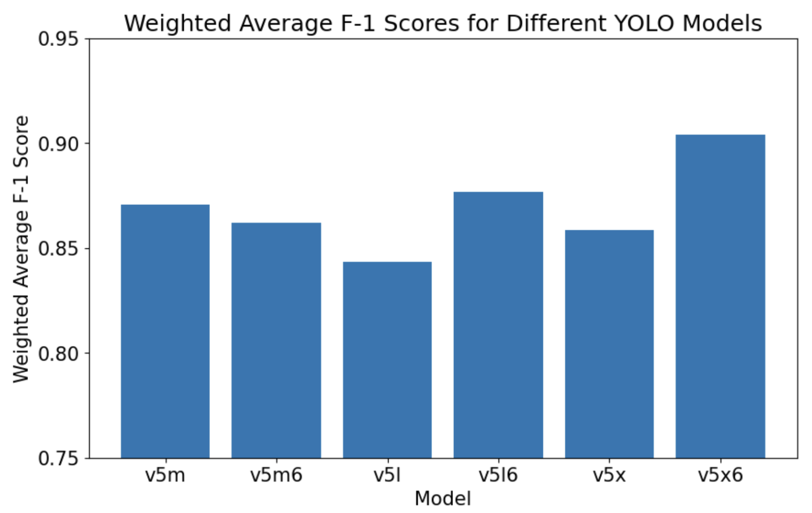
The above figure displays the average F-1 score for each model, weighted by class frequency. Although they are all very similar, x6 is the only one to reach above 0.9, and can thus be considered the best model. This is the most complex model, so this result is expected, but it is also the slowest, which has to be taken into consideration as well.
Data Augmentation and Results
The letters ‘B’, 'I', 'K', 'M', 'N', 'O', 'Q', and 'T' have been identified as weak across all models, each displaying an F-1 score lower than 0.7 in at least one model. To address this, we implemented two different data augmentation methods.The first method is to augment training data specifically for those identified weak letters, including a combination of simple duplication, random brightness adjustments ranging from -15% to 15%, and blurring up to 5 pixels. These techniques are applied randomly to increase the instances of weak class letters by threefold.
The second method employed is Test-Time Augmentation (TTA). TTA involves creating augmented versions of images in the test set through methods like zooming, flipping, and shifting. The model then makes separate predictions for each augmented image. The final prediction is an ensemble of these individual predictions, which is expected to yield greater accuracy than a prediction based on a single image.
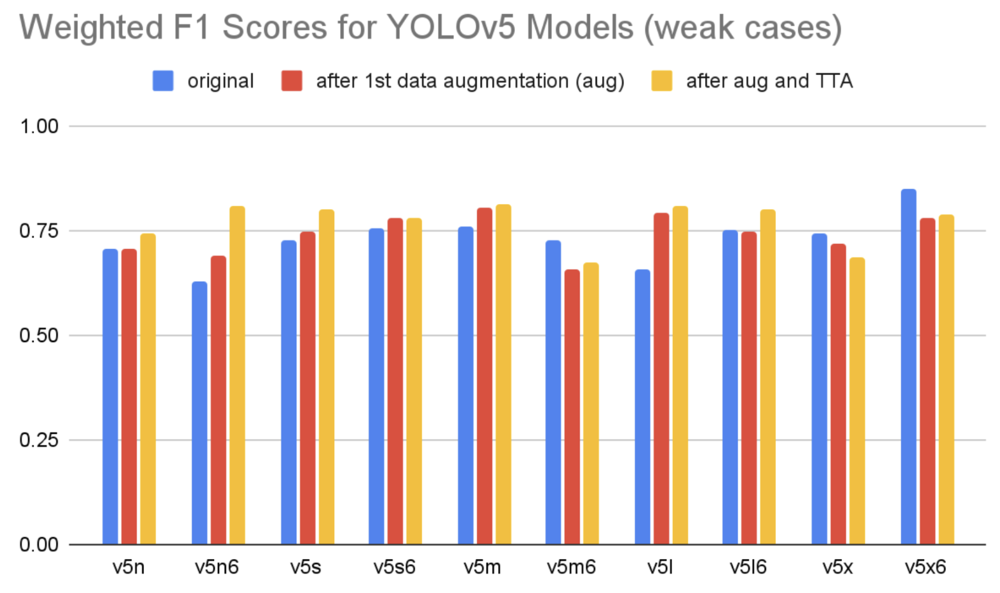
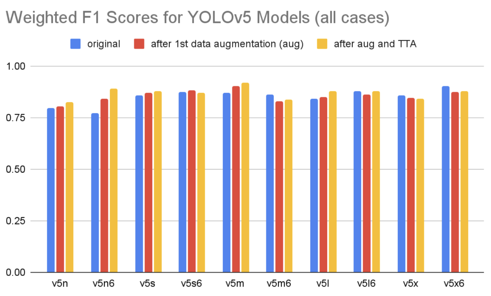
The first figure shows the weighted F-1 scores for weak cases for each model with the original data and the augmented data. Figure 16 shows the weighted F-1 scores for all cases. The general trend is that both data augmentation strategies are more beneficial for small, medium, and large models, and become more detrimental for the extra-large models.
We observed that v5x6, the largest model, originally yields the highest F-1 score (0.90), but this score decreases after data augmentation. Larger models have more parameters and are capable of learning more complex features. However, this complexity can be a double-edged sword as it makes them more prone to overfitting, especially if the training data (including augmented data) does not perfectly represent the variability in the real world. In addition, larger models might learn to rely on specific features that could be distorted or lost in the augmentation process, leading to decreased performance.
In contrast, the medium-sized model, v5m, yields the highest F-1 score after training data augmentation and TTA (F1 score of 0.92). This model seems to strike a balance between size and complexity. It's large enough to capture a wide range of features but not so large that it becomes prone to overfitting on the augmented data. This balance can make it more adaptable to variations introduced through TTA, leading to better generalization on the test dataset.
Specifically, TTA appears to be a good data augmentation strategy. The average F-1 score increased for all models except v5x6 and v5x, which decreased marginally. The greatest improvement was seen in v5n6, likely because its size benefited from the extra augmentation. The general increase in F-1 scores is because TTA involves augmenting the data at the time of testing, not during training. This often helps in making the model more robust to variations that it might not have seen during training. The general increase in F-1 scores across different model variants after applying TTA indicates that this strategy helped the models better generalize to new, unseen data, thus improving both precision and recall.
Best Model after model comparison, training data aug, and TTA
As model YOLOv5m (after training data aug on weak letters and TTA) yields the best results, we continue our analysis with this model, comparing it to YOLOv5m that we originally trained.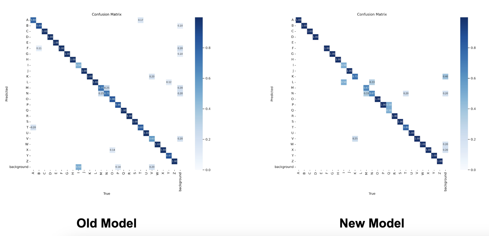
Confusion Matrix Comparison
The new model performs much better on letters that old model struggles with. For example, 'A' increase from 0.8 to 1, 'B' increases from 0.89 to 1, and 'I' increases from 0.5 to 1.Without TTA, there are more instances of misclassifications:
1. 'I' is often confused with 'J' (50% of the time).
2. 'M' and 'N' are confused with each other 25% of the time.
3. 'T' is confused with 'I' 20% of the time, which was not an issue with aug + TTA.
4. Background Class: Without aug+TTA, the 'background' class has a 50% error rate when confused with 'A' and a 14% error rate with 'Z', suggesting that the model with aug + TTA is more effective at distinguishing the absence of a sign.
The TTA-enhanced model had more instances of perfect classification (values of 1.00 on the diagonal) compared to the model without TTA. The TTA-enhanced model had more instances of perfect classification (values of 1.00 on the diagonal) compared to the model without TTA.
TTA seems to have helped reduce confusion between visually similar signs, as seen with fewer off-diagonal high values.
The use of TTA appears to have positively impacted the model's ability to classify ASL letters correctly, reducing the number of misclassifications and improving the confidence of correct predictions. To further improve the model without TTA, the same recommendations previously mentioned could be employed, with added emphasis on exploring TTA as a method to enhance model robustness and accuracy.
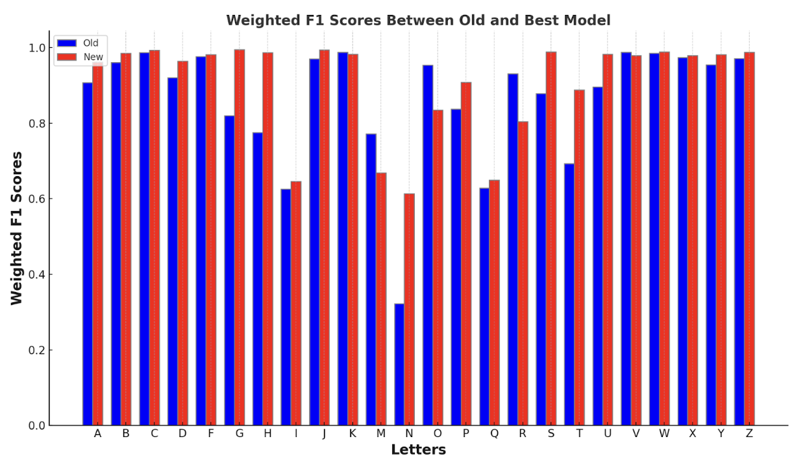
We observed an increase of F-1 score for all letters as seen after data augmentation and TTA has been applied to v5m.
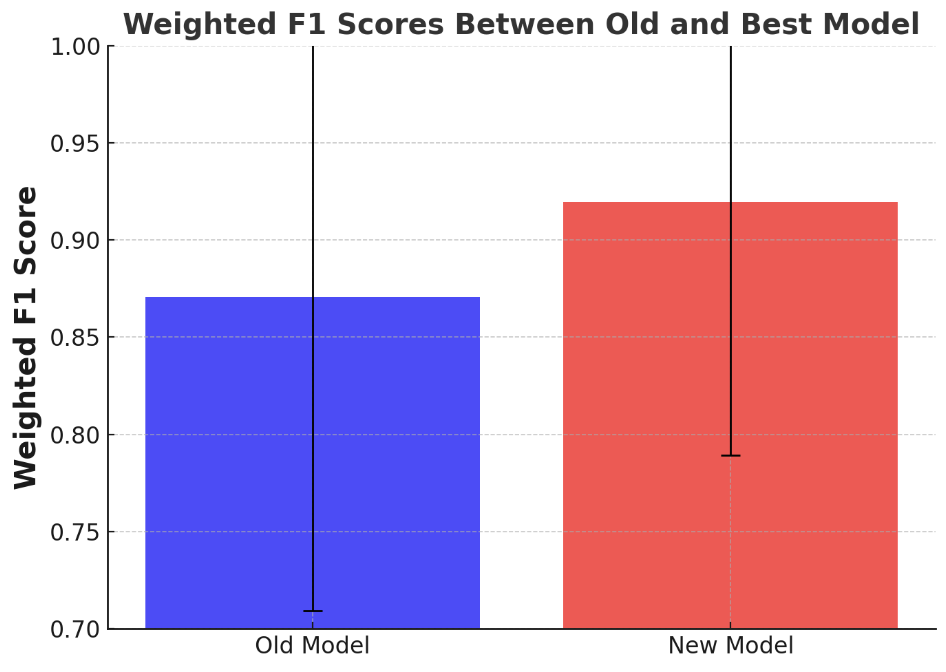
We observed an increase of weighted F1 scores and decrease in standard deviation after data augmentation and TTA has been applied to v5m.
Conclusion
In conclusion, we showed how we trained Keras Sequential CNN (image classification) and Yolov5 (object detection). Keras was able to achieve a test accuracy rate of 84% while
YOLO models consistently had an accuracy of about 90%.
Comparing all different YOLOv5 models, without second-round data augmentation on weak letters, the best YOLO model was YOLOv5x6,
but after data aug and TTA, the best model was YOLOv5m, achieving 92% weighted F-1 score on holdout test dataset.
Data augmentation strategies may be beneficial for small to medium models, but can become unpredictable with extra-large models.
Contribution Table
| Team Member | Contribution |
|---|---|
| Anna Sterzer |
|
| Srihith Pallamreddy |
|
| Zelda Lipschutz |
|
| Huaijin Tu |
|
| Lan Lan |
|
References
- Lee, David. “American Sign Language Letters Object Detection Dataset.” Roboflow, 27 July 2022, public.roboflow.com/object-detection/american-sign-language-letters.
- Fatmi, R., Rashad, S., & Integlia, R. (2019). Comparing ANN, SVM, and HMM based Machine Learning Methods for American Sign Language Recognition using Wearable Motion Sensors. 2019 IEEE 9th Annual Computing and Communication Workshop and Conference (CCWC)
- Fierro-Radilla, A. N., Perez-Daniel, K. R., Benitez-Garcia, G., Garcia, P. N., & Valdez, R. F. (2021). Similarity Learning for CNN-Based ASL Alphabet Recognition.
- Ren et al., 2015: "Faster R-CNN: Towards Real-Time Object Detection with Region Proposal Networks"
- Redmon et al., 2016: "You Only Look Once: Unified, Real-Time Object Detection"
- Liu et al., 2016: "SSD: Single Shot MultiBox Detector"
- Zhang et al., 2021: "ViT-YOLO:Transformer-Based YOLO for Object Detection"